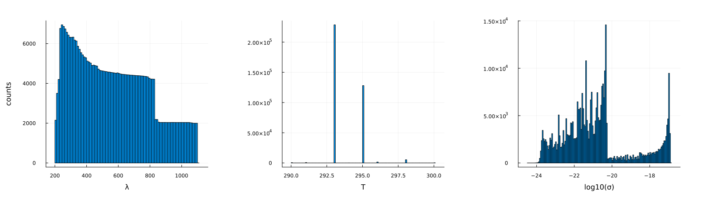

using Plots, MLPlotRecipes
using HDF5
using Tables
using MLJ, MLJGaussianProcesses\(\mathrm{O_3}\)
h5_path = "../../data/photolysis_data.h5"
isfile(h5_path)trueread in the HDF5 file with our data and identify the cross section data we need:
h5 = h5open(h5_path, "r");cross_sections = h5["cross-sections"]
"O3" ∈ keys(cross_sections)
O3_data = cross_sections["O3"]📂 HDF5.Group: /cross-sections/O3 (file: ../../data/photolysis_data.h5)
├─ 🏷️ T1_units
├─ 🏷️ T2_units
├─ 🏷️ category
├─ 🏷️ formula
├─ 🏷️ Δσ_units
├─ 🏷️ λ_units
├─ 🏷️ σ_units
├─ 🔢 T1
├─ 🔢 T2
├─ 🔢 source_idx
├─ 📂 source_info
│ ├─ 📂 1
│ │ ├─ 🏷️ author(year)
│ │ ├─ 🏷️ comments
│ │ ├─ 🏷️ doi
│ │ └─ 🏷️ download_url
│ ├─ 📂 10
│ │ ├─ 🏷️ author(year)
│ │ ├─ 🏷️ comments
│ │ ├─ 🏷️ doi
│ │ └─ 🏷️ download_url
│ ├─ 📂 100
│ │ ├─ 🏷️ author(year)
│ │ ├─ 🏷️ comments
│ │ ├─ 🏷️ doi
│ │ └─ 🏷️ download_url
│ ├─ 📂 101
│ │ ├─ 🏷️ author(year)
│ │ ├─ 🏷️ comments
│ │ ├─ 🏷️ doi
│ │ └─ 🏷️ download_url
│ ├─ 📂 102
│ │ ├─ 🏷️ author(year)
│ │ ├─ 🏷️ comments
│ │ ├─ 🏷️ doi
│ │ └─ 🏷️ download_url
│ ├─ 📂 103
│ │ ├─ 🏷️ author(year)
│ │ ├─ 🏷️ comments
│ │ ├─ 🏷️ doi
│ │ └─ 🏷️ download_url
│ ├─ 📂 104
│ │ ├─ 🏷️ author(year)
│ │ ├─ 🏷️ comments
│ │ ├─ 🏷️ doi
│ │ └─ 🏷️ download_url
│ ├─ 📂 105
│ │ ├─ 🏷️ author(year)
│ │ ├─ 🏷️ comments
│ │ ├─ 🏷️ doi
│ │ └─ 🏷️ download_url
│ ├─ 📂 106
│ │ ├─ 🏷️ author(year)
│ │ ├─ 🏷️ comments
│ │ ├─ 🏷️ doi
│ │ └─ 🏷️ download_url
│ ├─ 📂 107
│ │ ├─ 🏷️ author(year)
│ │ ├─ 🏷️ comments
│ │ ├─ 🏷️ doi
│ │ └─ 🏷️ download_url
│ ├─ 📂 108
│ │ ├─ 🏷️ author(year)
│ │ ├─ 🏷️ comments
│ │ ├─ 🏷️ doi
│ │ └─ 🏷️ download_url
│ ├─ 📂 109
│ │ ├─ 🏷️ author(year)
│ │ ├─ 🏷️ comments
│ │ ├─ 🏷️ doi
│ │ └─ 🏷️ download_url
│ ├─ 📂 11
│ │ ├─ 🏷️ author(year)
│ │ ├─ 🏷️ comments
│ │ ├─ 🏷️ doi
│ │ └─ 🏷️ download_url
│ ├─ 📂 110
│ │ ├─ 🏷️ author(year)
│ │ ├─ 🏷️ comments
│ │ ├─ 🏷️ doi
│ │ └─ 🏷️ download_url
│ ├─ 📂 111
│ │ ├─ 🏷️ author(year)
│ │ ├─ 🏷️ comments
│ │ ├─ 🏷️ doi
│ │ └─ 🏷️ download_url
│ ├─ 📂 112
│ │ ├─ 🏷️ author(year)
│ │ ├─ 🏷️ comments
│ │ ├─ 🏷️ doi
│ │ └─ 🏷️ download_url
│ ├─ 📂 113
│ │ ├─ 🏷️ author(year)
│ │ ├─ 🏷️ comments
│ │ ├─ 🏷️ doi
│ │ └─ 🏷️ download_url
│ ├─ 📂 114
│ │ ├─ 🏷️ author(year)
│ │ ├─ 🏷️ comments
│ │ ├─ 🏷️ doi
│ │ └─ 🏷️ download_url
│ ├─ 📂 115
│ │ ├─ 🏷️ author(year)
│ │ ├─ 🏷️ comments
│ │ ├─ 🏷️ doi
│ │ └─ 🏷️ download_url
│ ├─ 📂 116
│ │ ├─ 🏷️ author(year)
│ │ ├─ 🏷️ comments
│ │ ├─ 🏷️ doi
│ │ └─ 🏷️ download_url
│ ├─ 📂 117
│ │ ├─ 🏷️ author(year)
│ │ ├─ 🏷️ comments
│ │ ├─ 🏷️ doi
│ │ └─ 🏷️ download_url
│ ├─ 📂 118
│ │ ├─ 🏷️ author(year)
│ │ ├─ 🏷️ comments
│ │ ├─ 🏷️ doi
│ │ └─ 🏷️ download_url
│ ├─ 📂 119
│ │ ├─ 🏷️ author(year)
│ │ ├─ 🏷️ comments
│ │ ├─ 🏷️ doi
│ │ └─ 🏷️ download_url
│ ├─ 📂 12
│ │ ├─ 🏷️ author(year)
│ │ ├─ 🏷️ comments
│ │ ├─ 🏷️ doi
│ │ └─ 🏷️ download_url
│ ├─ 📂 120
│ │ ├─ 🏷️ author(year)
│ │ ├─ 🏷️ comments
│ │ ├─ 🏷️ doi
│ │ └─ 🏷️ download_url
│ └─ (224 more children)
├─ 🔢 Δσ
├─ 🔢 λ
└─ 🔢 σλs = read(O3_data, "λ")
σs = read(O3_data, "σ")
T1s = read(O3_data, "T1")
T2s = read(O3_data, "T2")
source_idx = read(O3_data, "source_idx")
T_units = read_attribute(O3_data, "T1_units")
category= read_attribute(O3_data, "category")
formula= read_attribute(O3_data, "formula")
λ_units = read_attribute(O3_data, "λ_units")
σ_units = read_attribute(O3_data, "σ_units")
println(T_units)
println(category)
println(formula)
println(λ_units)
println(σ_units)
close(h5)K
Ozone
O3
nm
cm^2println(size(λs))
println(size(T1s))
println(size(σs))(2591145,)
(249,)
(2591145,)using DataFramesfunction generate_data_table(λs, σs, T1s, T2s, source_idx; σ_lb=1e-25, σ_ub=1.0, T_lb=290.0, T_ub=305.0, λ_lb=200.0, λ_ub=1100.0)
Tout = [T1s[source_idx[i]] for i ∈ 1:size(source_idx, 1)]
# we want T2 to be NaN
idx = [ i for i ∈ 1:size(source_idx,1) if isnan(T2s[source_idx[i]])]
λout = λs[idx]
σout = σs[idx]
Tout = Tout[idx]
source_out = source_idx[idx]
# we want T between T_lb and T_ub
idx2 = [i for i ∈ 1:size(λout,1) if (T_lb ≤ Tout[i] && Tout[i] ≤ T_ub)]
λout = λout[idx2]
σout = σout[idx2]
Tout = Tout[idx2]
source_out = source_out[idx2]
# we want σ to not be NaN and greater than 0.
idx3 = [i for i ∈ 1:size(σout,1) if !isnan(σout[i]) && (σout[i] > σ_lb) && (σout[i] ≤ σ_ub)]
λout = λout[idx3]
σout = σout[idx3]
Tout = Tout[idx3]
source_out = source_out[idx3]
# we want λ to be between λ_lb and λ_ub
idx4 = [i for i ∈ 1:size(λout,1) if (λ_lb ≤ λout[i] && λout[i] ≤ λ_ub)]
λout = λout[idx4]
σout = σout[idx4]
Tout = Tout[idx4]
source_out = source_out[idx4]
# idxs = [i for i ∈ 1:size(source_idx, 1) if (T_lb < Temps[i] && Temps[i] < T_ub) && (!isnan(σs[i])) && (σs[i] ≥ 0.0) && (λ_lb ≤ λs[i] && λs[i] ≤ λ_ub) && isnan(T2s[source_idx[i]])]
# 5. Create table with data containing the good values
#data_table = Tables.columntable((; λ=λout, σ=σout, T=Tout, source_id=source_out))
df = DataFrame(λ=λout, σ=σout, T=Tout, source_id=source_out)
return df
end
df = generate_data_table(λs, σs, T1s, T2s, source_idx)
println(nrow(df))
describe(df)3650124×7 DataFrame
| Row | variable | mean | min | median | max | nmissing | eltype |
|---|---|---|---|---|---|---|---|
| Symbol | Float64 | Real | Float64 | Real | Int64 | DataType | |
| 1 | λ | 566.604 | 200.0 | 541.333 | 1100.0 | 0 | Float64 |
| 2 | σ | 9.09226e-19 | 3.4377e-25 | 8.00578e-22 | 1.41e-17 | 0 | Float64 |
| 3 | T | 293.785 | 290.0 | 293.0 | 300.0 | 0 | Float64 |
| 4 | source_id | 130.496 | 1 | 175.0 | 249 | 0 | Int64 |
p = scatter(
df.λ[1:5:end],
df.T[1:5:end],
zcolor=log10.(df.σ[1:5:end]),
ms=3,
msw=0,
xlabel="λ [$(λ_units)]",
ylabel="T [$(T_units)]",
label="data",
alpha=0.7,
rightmargin=10Plots.mm,
colorbar_title="log10(σ) [cm²]",
title="Absorption Cross Section Data for O₃",
)
savefig("O3_log10σ.png")
display(p)
p = scatter(
df.λ[1:5:end],
df.T[1:5:end],
zcolor=df.σ[1:5:end],
ms=3,
msw=0,
xlabel="λ [$(λ_units)]",
ylabel="T [$(T_units)]",
label="data",
alpha=0.7,
rightmargin=10Plots.mm,
colorbar_title="σ [cm²]",
title="Absorption Cross Section Data for O₃",
)
savefig("O3_σ.png")
display(p)
p1 = histogram(df.λ, xlabel="λ", ylabel="counts", label="", margin=10Plots.mm)
p2 = histogram(df.T, xlabel="T", label="", margin=10Plots.mm)
p3 = histogram(log10.(df.σ), xlabel="log10(σ)", label="", margin=10Plots.mm)
#p3 = histogram(df.σ, xlabel="σ", ylabel="counts")
phist = plot(p1, p2, p3, layout=(1,3), size=(1600, 450))
savefig("histograms.png")
display(phist)
We can now thik of this as providing our training data. The goal is to learn a function \(f:(\lambda, T) \mapsto \sigma\). Our model of choice will be to use a gaussian process.
First let’s split up the data into training and testing pairs.
Important
We should think carefully about how to do this. The most important information is probably in regions where there is rapid changes. We can also examine fitting \(\log(\sigma)\) if \(\sigma\) alone is to sharply peaked…
n = nrow(df)
train_frac = 0.01
idxs = shuffle(1:n)
ntrain = round(Int, (1.0 - train_frac)*n)
idx_train = idxs[1:ntrain]
idx_test = idxs[ntrain+1:end]
df_train = df[idx_train, :]
df_test = df[idx_test, :]3650×4 DataFrame
3625 rows omitted
| Row | λ | σ | T | source_id |
|---|---|---|---|---|
| Float64 | Float64 | Float64 | Int64 | |
| 1 | 668.8 | 1.73771e-21 | 293.0 | 175 |
| 2 | 852.59 | 1.44575e-22 | 293.0 | 176 |
| 3 | 724.0 | 5.523e-22 | 295.0 | 53 |
| 4 | 627.932 | 3.746e-21 | 293.0 | 221 |
| 5 | 234.74 | 6.18845e-18 | 293.0 | 176 |
| 6 | 599.76 | 5.13058e-21 | 295.0 | 48 |
| 7 | 885.13 | 4.37375e-23 | 293.0 | 175 |
| 8 | 408.408 | 7.938e-23 | 293.0 | 221 |
| 9 | 800.28 | 1.55912e-22 | 295.0 | 48 |
| 10 | 219.24 | 1.59597e-18 | 293.0 | 175 |
| 11 | 359.25 | 7.69109e-23 | 293.0 | 176 |
| 12 | 803.5 | 1.52178e-22 | 295.0 | 48 |
| 13 | 442.36 | 1.77009e-22 | 293.0 | 176 |
| ⋮ | ⋮ | ⋮ | ⋮ | ⋮ |
| 3639 | 364.7 | 4.70862e-23 | 295.0 | 48 |
| 3640 | 591.2 | 4.4885e-21 | 295.0 | 52 |
| 3641 | 887.02 | 4.80926e-23 | 293.0 | 175 |
| 3642 | 711.43 | 7.09813e-22 | 293.0 | 176 |
| 3643 | 750.74 | 4.15931e-22 | 295.0 | 48 |
| 3644 | 828.4 | 1.10054e-22 | 295.0 | 52 |
| 3645 | 657.45 | 2.17106e-21 | 293.0 | 175 |
| 3646 | 964.75 | 8.73398e-24 | 293.0 | 176 |
| 3647 | 220.09 | 1.73649e-18 | 293.0 | 175 |
| 3648 | 957.29 | 1.33572e-23 | 293.0 | 176 |
| 3649 | 257.0 | 1.09734e-17 | 295.0 | 50 |
| 3650 | 1052.21 | 3.73944e-24 | 293.0 | 175 |
Xtrain = df_train[!, [:λ, :T]]
ytrain = df_train[!, :σ]
Xtest = df_test[!, [:λ, :T]]
ytest = df_test[!, :σ]3650-element Vector{Float64}:
1.73771e-21
1.445749e-22
5.523e-22
3.746e-21
6.188448e-18
5.13058e-21
4.37375e-23
7.938e-23
1.55912e-22
1.59597e-18
7.691088e-23
1.52178e-22
1.770092e-22
⋮
4.70862e-23
4.4885e-21
4.80926e-23
7.098132e-22
4.15931e-22
1.10054e-22
2.17106e-21
8.733981e-24
1.73649e-18
1.335722e-23
1.09734e-17
3.73944e-24gpr = GPR()
#mach = machine(gpr, Xtrain, ytrain) |> fit!
GPR(
μ = 0.0,
k = MLJGaussianProcesses.default_kernel,
θ_init = (σf² = ParameterHandling.Positive{Float64, typeof(exp), Float64}(-1.490116130486996e-8, exp, 1.4901161193847656e-8), ℓ = ParameterHandling.Positive{Float64, typeof(exp), Float64}(-1.490116130486996e-8, exp, 1.4901161193847656e-8)),
σ² = 1.0e-6,
optimizer = Optim.LBFGS{Nothing, LineSearches.InitialStatic{Float64}, LineSearches.HagerZhang{Float64, Base.RefValue{Bool}}, Optim.var"#19#21"}(10, LineSearches.InitialStatic{Float64}
alpha: Float64 1.0
scaled: Bool false
, LineSearches.HagerZhang{Float64, Base.RefValue{Bool}}
delta: Float64 0.1
sigma: Float64 0.9
alphamax: Float64 Inf
rho: Float64 5.0
epsilon: Float64 1.0e-6
gamma: Float64 0.66
linesearchmax: Int64 50
psi3: Float64 0.1
display: Int64 0
mayterminate: Base.RefValue{Bool}
, nothing, Optim.var"#19#21"(), Optim.Flat(), true))